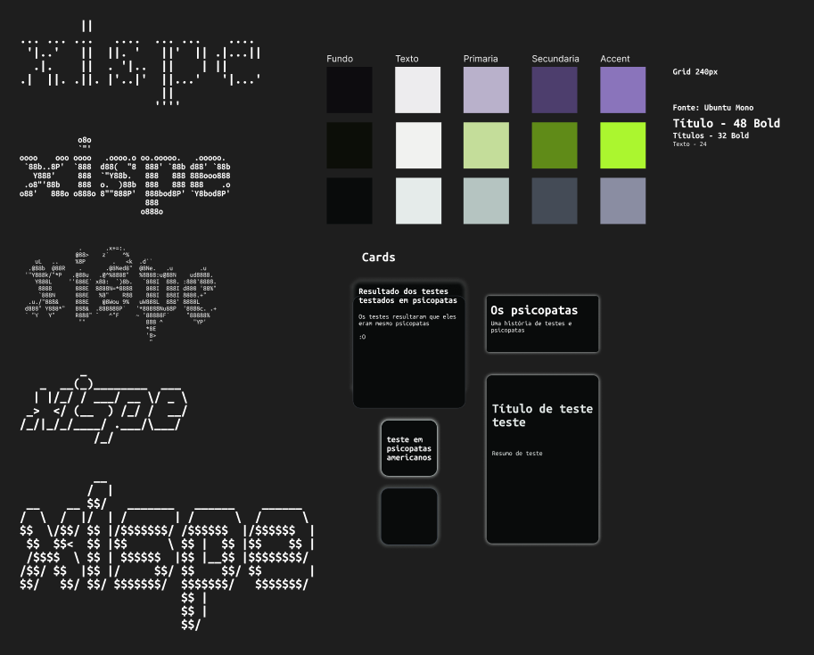
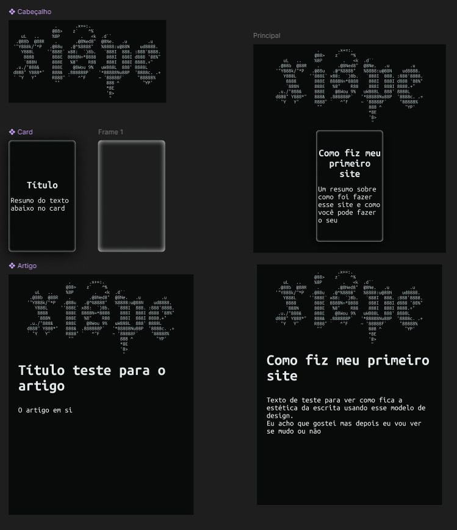

Ao me deparar com vídeo falando sobre a "small web" ou "old web" me deu uma vontade de participar desse movimento, principalmente por odiar o ambiente das grandes redes sociais e ainda assim querer produzir conteúdos de qualidade para a internet. E mesmo que eu não seja um Web Dev profissional ou algo do tipo, eu acredito que esse tipo de conteúdo é muito escasso, principalmente em brasiliense, então vou contribuir com minha experiência.
E não vou ensinar como funciona um site ou como se cria um em profundidade porque não é minha intenção, quero que esse seja mais um guia de boas referências que usei. Portanto espero que esse texto sirva como entretenimento ou uma motivação para você criar seu site também agora mesmo.
Vídeos que me motivaram:
https://www.youtube.com/watch?v=gwUz3E9AW0w&ab_channel=NetworkChuck https://www.youtube.com/watch?v=EXfFBEuCAr0&t=66s&ab_channel=NetworkChuckReferências para a criação:
https://www.youtube.com/watch?v=wIuVvCuiJhU&ab_channel=Juxtopposed https://www.youtube.com/watch?v=1pW_sk-2y40&t=332s&ab_channel=Juxtopposed https://www.youtube.com/watch?v=qyomWr_C_jA&ab_channel=Sajid https://youtu.be/OjEg0IBR_ak?si=OXDxwP8lPPrXA6lh https://youtu.be/nq19w0d5o0U?si=jxw0uYsXgkrRe-3I https://www.youtube.com/watch?v=wsTv9y931o8&ab_channel=Coding2GOUsando os vídeos de referência eu primeiro baixei o Figma e fui tentar desenvolver uma identidade visual que me satisfaça utilizando as teorias dos vídeos acima. Depois de tentar algumas opções cheguei a essas opções para o site:
E depois de muito bater a cabeça no teclado tentei acertar um layout que seja interessante porém não enjoativo, porém por não ter nenhum conhecimento na área acabei não avançando. Após perceber isso concluí que deveria estudar mais sobre essa área e usei essas guias para desenvolver o design final:
Após esse estudo e com a visão de site que eu queria mais consolidada cheguei a esse resultado:
Sinceramente, achei o resultado aceitável para uma primeira experiência nessa área tão interessante do design e como eu posso mudar a qualquer momento no futuro eu aceitei esse resultado. Eu optei por deixar todos os objetos o mais dinâmicos o possível para que eu não tivesse que lidar com os diferentes formatos de tela.
Para você que vai criar um site também eu recomendo muito que aprenda a usar propriamente o Figma, deixei um link de um curso extremamente introdutório nas referências em vídeo, porque essa ferramenta é muito útil.
Para resolver esse problema existem algumas opções, porém eu escolhi seguir pela via do github e o neocities, só porque é muito fácil e redundância is my passion.
Para o github é só ter uma conta e criar um respositório com o nome "nome.github.io" e depois criar um arquivo index.html, que é a página principal do seu site e pronto seu site esta funcionando perfeitamente na internet.
No neocities é ainda mais fácil pois é só fazer um cadastro rápido e você já vai se deparar com a página para criar a sua página principal.
Para criar seu site existem algumas opções, tanto sem programar quanto programando (eu sei que html e css não é programação é só jeito de falar). Eu considero melhor ir fazer o html manualmente, o que não é muito difícil e é um conhecimento que vale a pena. E sem contar que atualmente as IAs já conseguem te ajudar muito.
Para criar e consolidar uma ideia de design e chegar no projeto final eu demorei cerca de 2 a 3 dias. Na parte de desenvolver o html não demorei mais de 3 horas, porém leve em consideração que eu já tenho conhecimento nessa área, para uma pessoa que desconhece completamente esse processo julgo que demore de um à dois dias aprendendo para fazer algo como esse site.
Esse projeto que tive ideia enquanto estava no vaso e durou aproximadamente 4 dias valeu muito a pena. Principalmente pela gratificação de ver meu pensamento se tornando cada vez mais concreto e ainda melhor por saber que essa dopamina vem de algo real e não de algoritmos feitos para te hipnotizar e te manter em um ciclo estático sendo uma verdadeira droga.
Desejo sinceramente que você leitor tenha se motivado a também criar seu site, não precisa ser algo extremamente bem feito, só algo que transpareça você. E recomendo que veja outros sites como esse usando o site search.marginalia.nu e clique em random para apreciar todos os diferentes universos existentes
Caso queira entrar em contato comigo: xispe01@proton.me